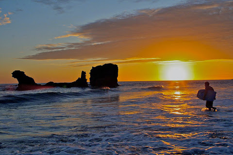
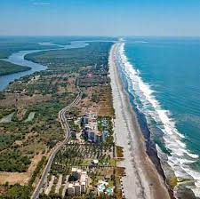
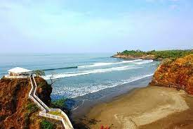
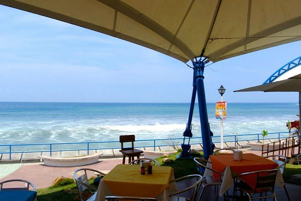

El Salvador es un pequeño paraíso tropical de 321 kilómetros de costas en el Océano Pacífico, en los cuales se ubican casi un centenar de playas, algunas de ellas muy conocidas por turistas nacionales y extranjeros.
Por tradición El Salvadores uno de los destinos turísticos preferidos en Centro América para vacacionar ya que sus playas suelen adaptarse a cualquier necesidad turística, como por ejemplo practicar surf, bañarse, nadar, tomar el sol, realizar escapadas románticas o simplemente contemplar los bellos paisajes. Los departamentos de El Salvador que cuentan con acceso al Pacífico son, en la zona occidental del país, los departamentos de Ahuachapán y Sonsonate; en la zona central del país están La Libertad y La Paz, y en la zona oriental encontramos San Miguel, Usulután y La Unión. En realidad al ser el país pequeño tiene s la ventaja de poder desplazarte de cualquier parte del territorio a una playa, en cuestión de minutos o unas pocas horas.
En cuanto a los costos de acceso a las playas, en la mayoría es gratuito el ingreso y en otras es bastante módico. Además existen numerosos hoteles, restaurantes y ranchos que ofrecen a los turistas deliciosa comida típica nacional e internacional, así como alojamiento para quienes quieran disfrutar de una estadía de más de un día. Por lo general la afluencia de turistas a las playas salvadoreñas es frecuente en todo el año, especialmente los fines de semana, en la temporada de Semana Santa y en las vacaciones agostinas (del 1 al 6 de agosto, en el marco de las fiestas patronales de San Salvador). A parte de lo anterior, El Salvador también cuenta con otras opciones interesantes en su zona costera, entre las cuales se pueden encontrar islas, barras, manglares, esteros, bahías, bocanas y el Golfo de Fonseca.
Es interesante también conocer que se puede cruzar toda la costa salvadoreña en unas 5 ó 6 horas por medio de la Carretera del Litoral, la cual conecta con todas las playas descritas en este sitio. En este trayecto los visitantes pueden deleitarse con impresionantes vistas del Océano Pacífico y encontrarán diversos restaurantes con frescos y exquisitos frutos del mar, como ostras, conchas, langostas, camarones, pescados, calamares, pulpos, caracoles y más.
|  |  |
|---|---|
| Playa el Tunco | Costa del Sol |
|  |  |
| Playa el Cuco | Playa San Marcelino |